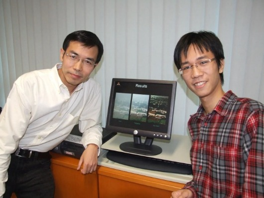

～再談基礎科學的重要性～
上次我在「基礎科學的重要性」一文中提到，傑出的「應用科學」必定建立在紮實的基礎科學之上。
也舉了目前最火紅的計算機科學/人工智能為例，許多在這學門有劃時代貢獻或重大創見的科學家在大學或研究所階段主修的專業是基礎科學。https://www.facebook.com/groups/695697124716309/permalink/975857913366894/
前幾天跟兒子聊他最近要投稿頂會的論文時，談到他研究的CV（電腦視覺）領域最近的發展。
目前在這領域中，最耀眼的一位年輕科學巨星是出身中國清華大學本科、香港中文大學博士的「何愷明」（fb將他從中國挖走，據說年薪酬USD400萬以上）。
此人高中時期，獲得過中國全國物理競賽和省級化學競賽的一等獎。拿到了保送清華的資格，仍然決定參加高考（大學聯考）測試自己實力。

高考結果出爐，何愷明獲得了滿分900分的成績，成為當年廣東省9位滿分狀元之一！
大學本科他進入了頂尖名師、高手雲集 的「清華姚錢數」（計算機姚期智班、錢學森力學班、數理基礎科學班）的數理基礎科學班。
該班的宗旨是：為高等研究中心培養後備軍；為數學、物理學等基礎學科培養富有創新意識和國際競爭力的優秀人才；為與基礎科學密切相關的其它學科培養具有開拓精神和良好理科素養的創新人才。
在課程設置方面，數理基科班在一、二年級階段設有16門物理和數學主修課，第三年按不同主修方向設置一些課程，主修學科方向分為：數學、物理和對數理要求較高的其他學科領域（計算機科學、材料科學、生命科學等）。三年級開設「專題研究課」，對學生進行科研實踐訓練，有利於他們選擇日後的研究方向。
何愷明後來在AI領域中，對數據分析、現象觀察能有洞若觀火直指核心的能力，與他在基礎科學上的扎實訓練密不可分！
獵豹在基礎的程式課程中，再三強調與數學結合的重要性也正基於此：沒有數理知識、邏輯推理為背景的程式語法，是膚淺空洞的。
多盼望台灣政府在高等教育能投入更多的資源在基礎科學上，激發年輕人對科學研究的熱情，讓有天份、有潛力的孩子 能有更大的視野、雄心，提供他們更好的師資、設備、訓練。
讓我們台灣的子弟能具備在國際舞台上與他國菁英一較高下的能力！
https://zhuanlan.zhihu.com/p/55349752⋯⋯
https://www.facebook.com/groups/695697124716309/permalink/1000790947540257/